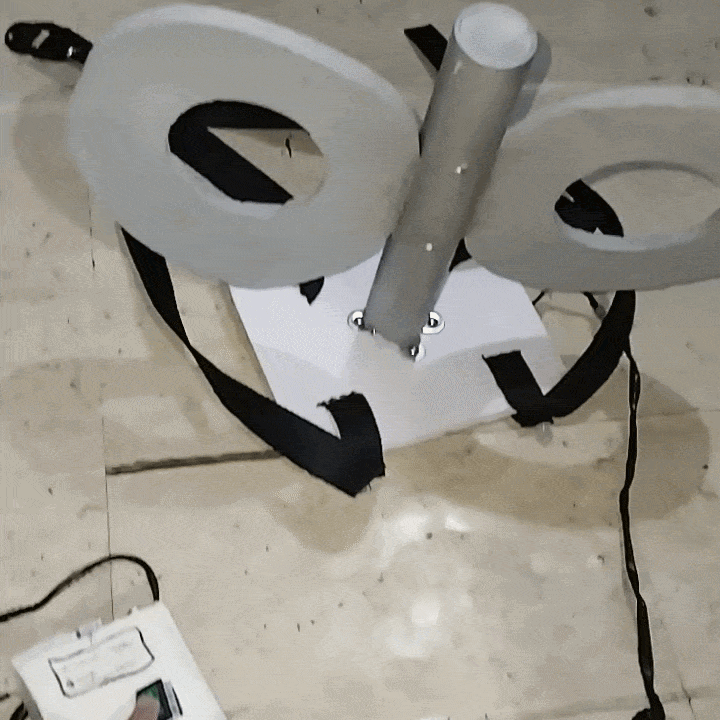

Wall of Projects
Nano Shinonome Key

I consider this to be the start of my maker journey, because it's the first complete, end-to-end project where I had the idea, then bought the materials, and fabricated it!
And also 'cause it's Nano Shinonome from da big Nichijou (best show)
This is the project I can show off a bit and wear to conventions or whatev!
FUTURE PROJECT

Any new project will fill up this wall of projects...
I'll hope to have many, MANY projects stored on this wall soon...
Currently there's only one project (well, one I consider worthy of this wall) displayed, there'll be a page to talk about the ins and outs of each project when you click!!